List of Favorite Books
The full list is on Goodreads The Story
Graph.
It's so incredibly hard to make a selection. And my preferences change over time!
I dislike it when people have long lists of books.
I always think: they can't all be good.
But then I made my own list, and it's true.
Each one of these has had a profound impact on my life.
1. Non Fiction
1.1 Total Recall
You probably did something right if you were a world-champion bodybuilding, a tier 1 actor, and a governor.
It's probably romanticed as it reads as fiction at times. Nevertheless it's a great story.
It's also the first biography I ever read, and it started my interest for reading and learning through biographies.
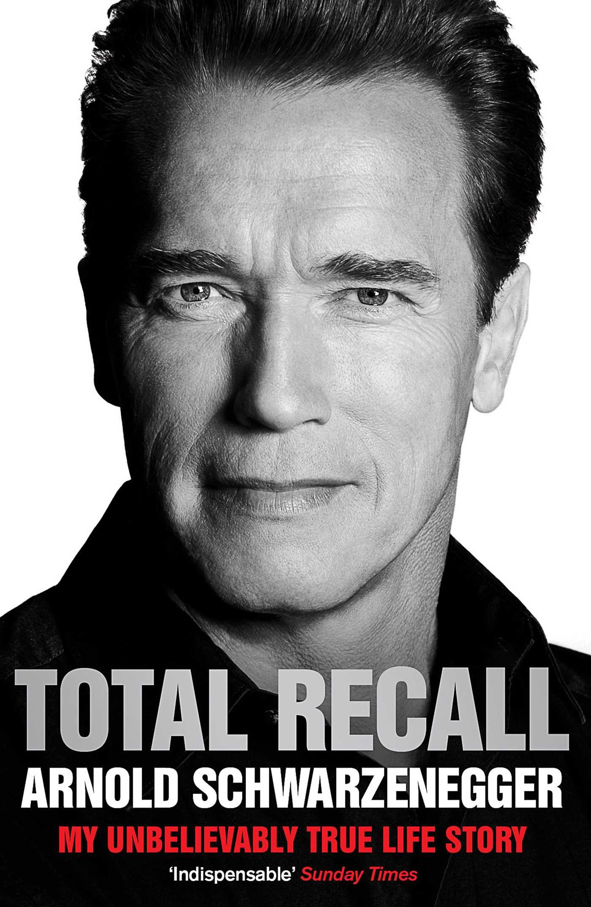1.2 Open
The most personal biography I've ever read. It made me realise even top stars doubt themselves. The only other book which shows this vulnerability was Meditations by Marcus Aurelius (which was never intended to be read lest himself).
I hesitated to read this book as I have little affinity with tennis, but I absolutely don't regret reading it!
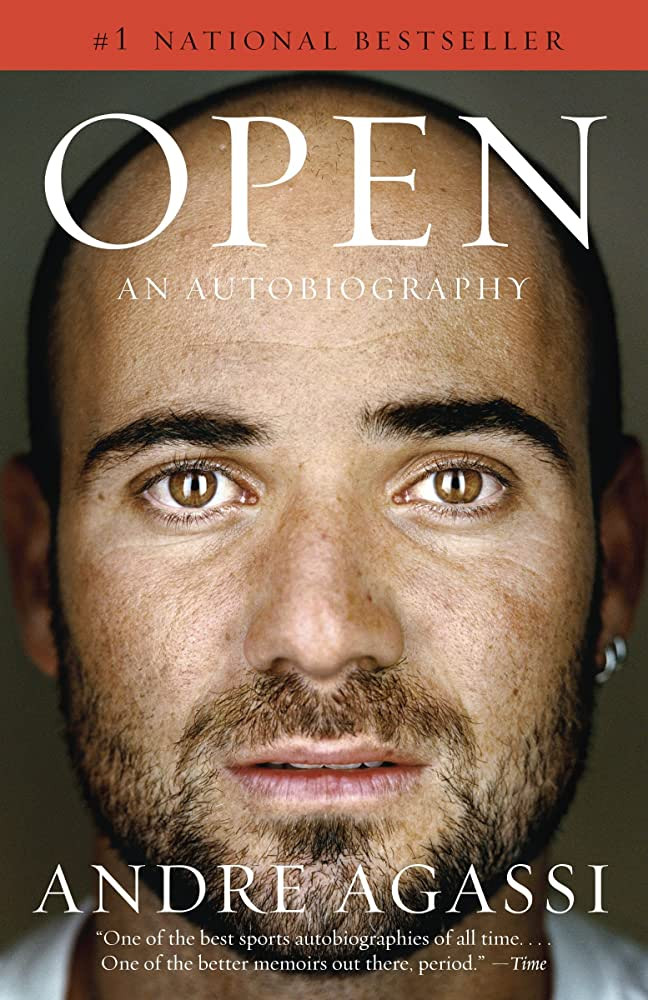1.3 The Beginning of Infinity
Finally an optimistic book about the future!
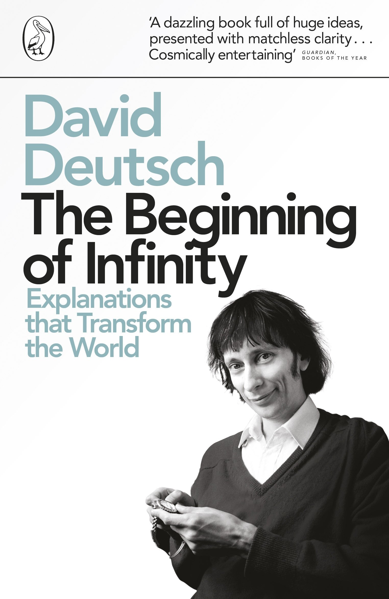1.4 Man's Search for Meaning
To learn the meaning of life...?
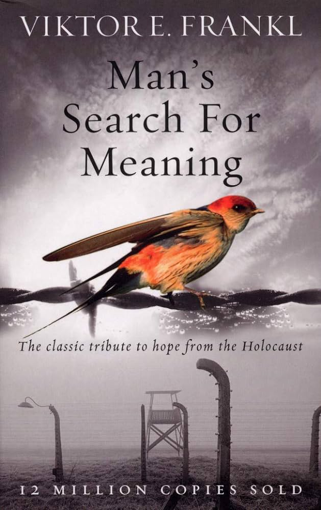1.5 The Way of the Superior Man
Because life is more than work alone.
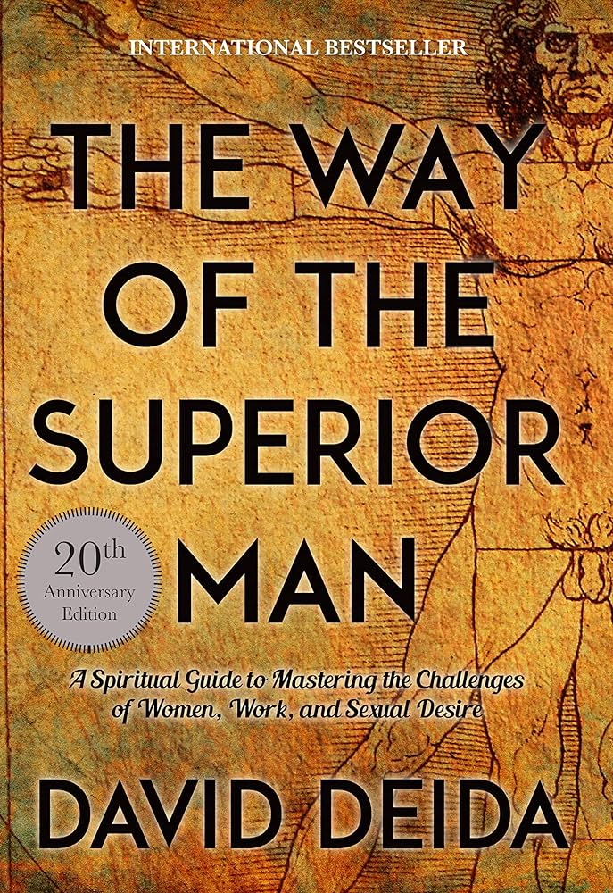1.6 Wild Company: The Untold Story of Banana Republic
Best inspiration to start building a business with my spouse.
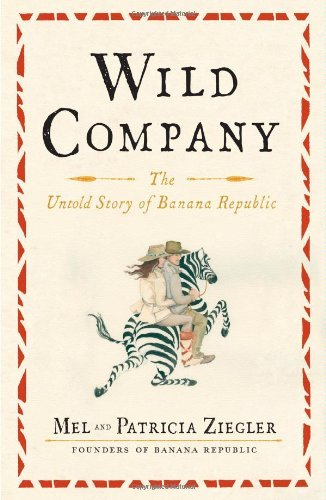1.7 Wild Swans
More or less covers the history of China for the last 100 years through a personal story. Helped me understand how China became what it is today.
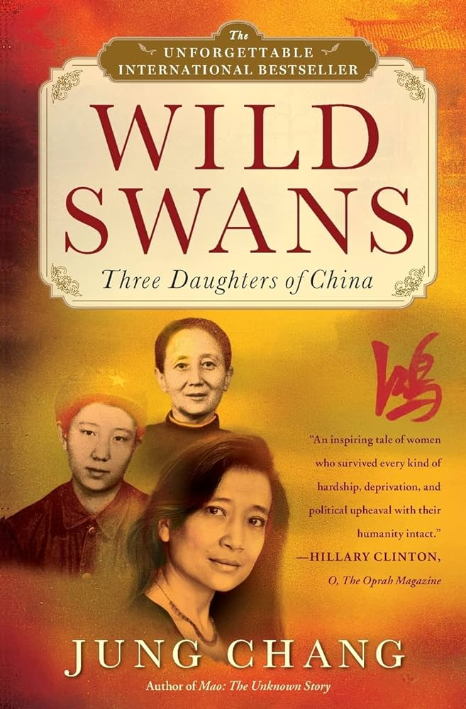1.8 Surely You're Joking Mister Feynmann
A masterclass in curiosity and the fruits it bears.

1.8 Thinking Fast and Slow
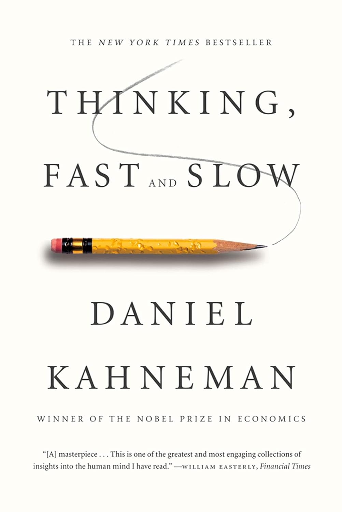1.9 Getting More
The first business book I read. I felt like a loser reading a book like this. But I read it over and over again because it was so useful in so many of life's situations. More than the contents from the book, it's the way it made me realise how much knowledge is available out there. From here I started buying more non-fiction books on any topic which interested me.
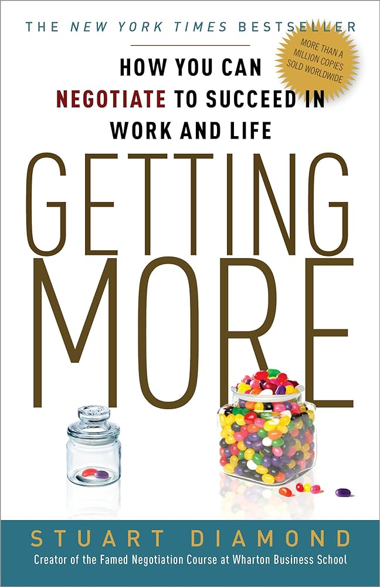1.10 How To Have A Good Day
This one I also read and listened over and over again in my early career.
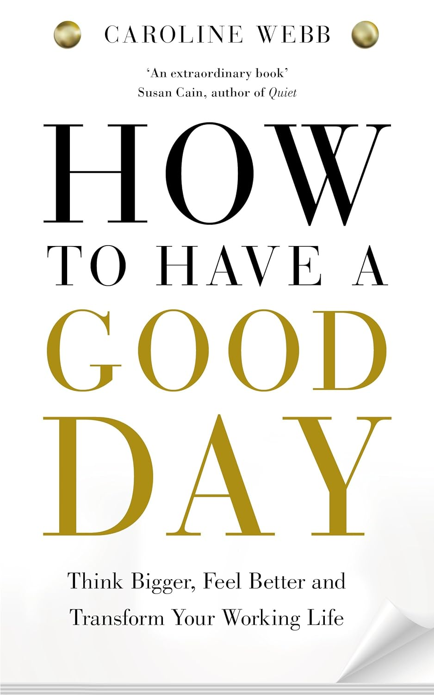1.11 The Power of Habit
I finished this one on a day flight from New-Zealand to Bangkok. I was hesitant because of the cliche title, but there are some good learnings there. Habits are a very powerful things. Made me realise quitting coffee is hard, better to replace it with something. More books have been written on habits. Atomic Habits being the most recent one. I haven't read that one.
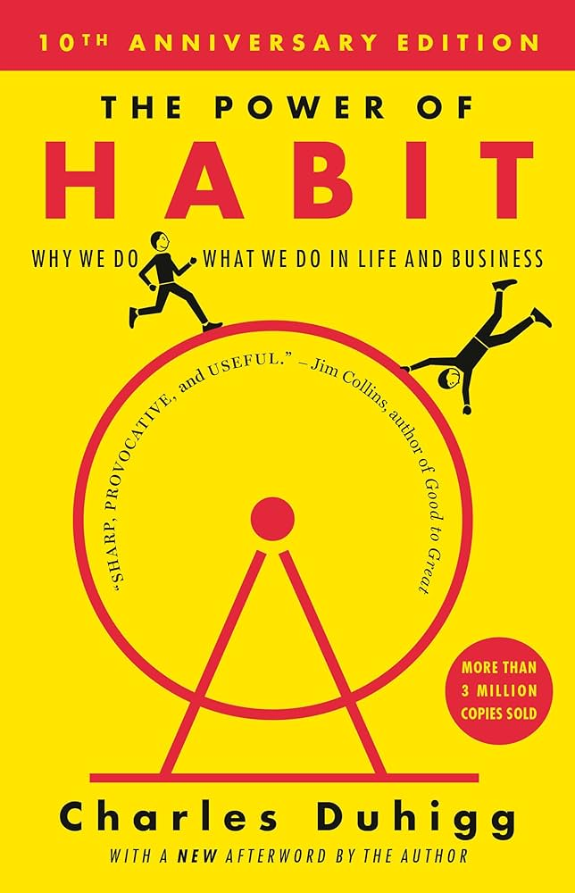1.12 The Power Of Now
This one and the next ones are more spiritual. This one has the same style of stupid cliche title as the previous, but is once again a gem to understand myself.
1.13 Siddharta
Leading the simple life.
1.14 The Monk Who Sold His Ferrari
1.15 The Untethered Soul
1.16 The Surrender Experiment
By the same writer as the previous, it's an autobiography. It helps me be more accepting of unexpected things which happen in my life.
1.17 Meditations
It puts a lot of things in perspective when reading the doubts from the most powerful man in the world 2000 years ago.
1.
2. Fiction
Fiction allows to create some great, inspiring people. Sometimes I wonder how authors can create these characters. Are they like that themselves, they must be great people then.
2.1 The Bonfire of Vanities
So deep, so real. Not just a good guys versus bad guys story, but real people with real nuances.
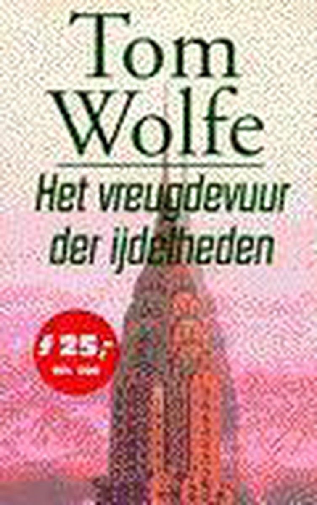2.2 The Secret History
This one strongly resonated with me when I was a student. Maybe I should re-read to remember how I feel about it today. Similarly to the Shadow Of The Wind it's quite a dark story if I remember correctly, and these days I'm more opportunistic.

2.3 The Shadow of the Wind
Such a magical story when I was younger, but re-reading it when I was in my thirties it resonated less. Maybe also because it's quite a dark story, and these days I'm more opportunistic.
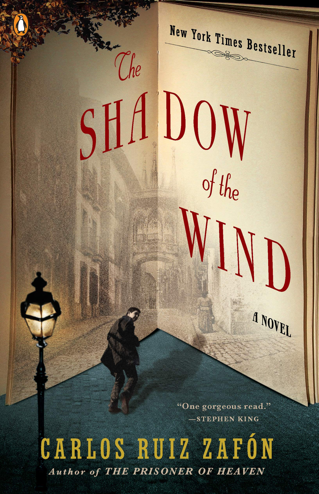2.4 A Gentleman in Moscow
A story which made me smile. The protagonist is the best most inspiring character in the world. Probably my favorite fiction book of all.

2.5 Shōgun
Rough to get through the first few chapters, but after that the characters become larger than life and the story full of surprises. What I really love is that some characters are just amazing, inspiring people.
2.6 Grand Hotel Europa
A piece of art about love, tourism, immigration, Europe, ... And on top of that it's hilarious.
2.7 Cryptonomicon
Similar to Shogun it's rough in the beginning, but it's great to read a book where all the pieces of the puzzle come together so magically at the end. Admittedly, it has been a very long time ago since I read this book.
2.8 1Q84
Yes, with a Q.
Weird, but nevertheless, I couldn't put it down.

2.9 Hitchhikers Guide to the Galaxy
It took me until my thirties to discover this. Way too late. Great humour.
2.10 The Thousand Autums Of Jacob de Zoet
There is something profound about a book which spans a person's entire lifetime. It makes me realise my time here on earth is limited, and I better start to appreciate the moment more, and make sure I don't regret not doing anything when my time has come.
Other than that also a good historical fiction book about the Dutch in Japan in the colonial times.